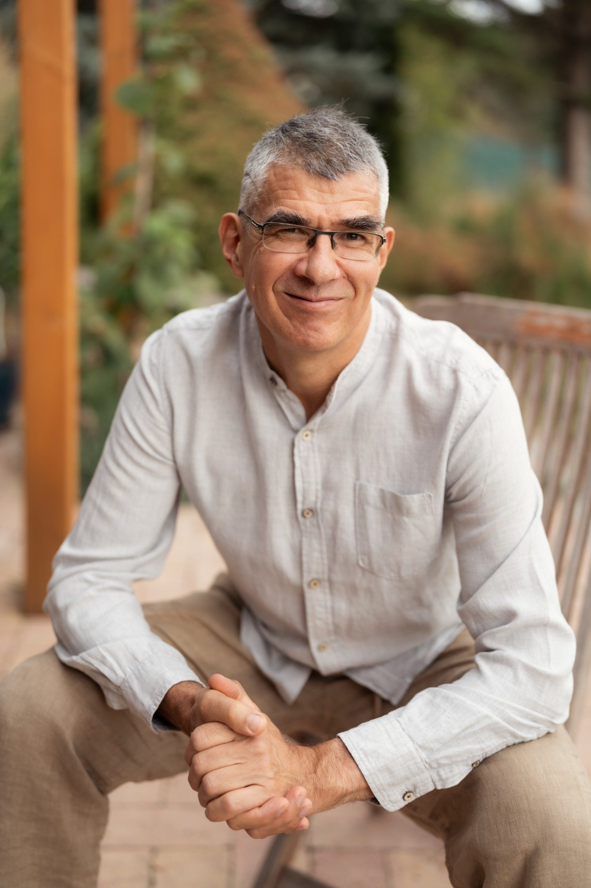
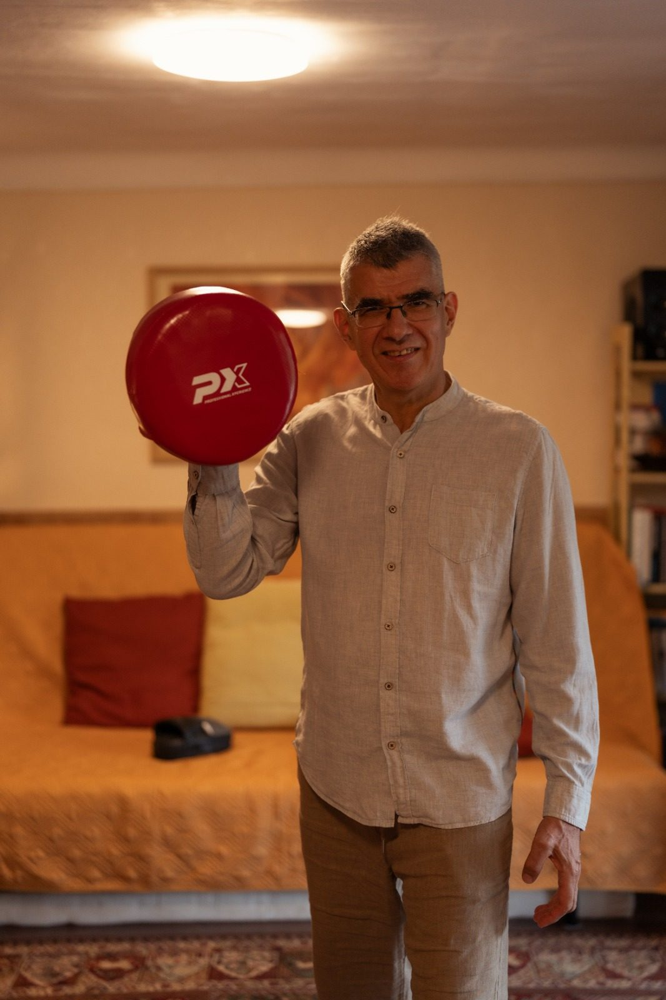
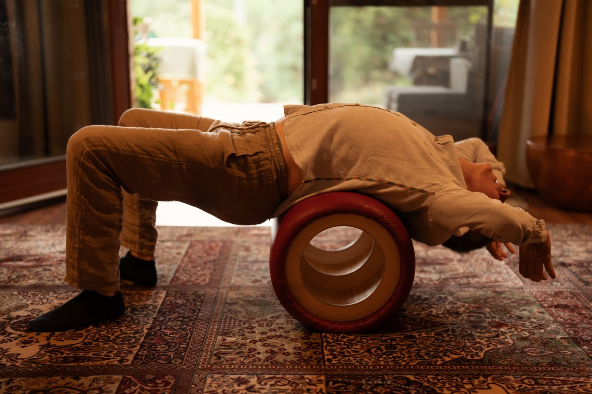
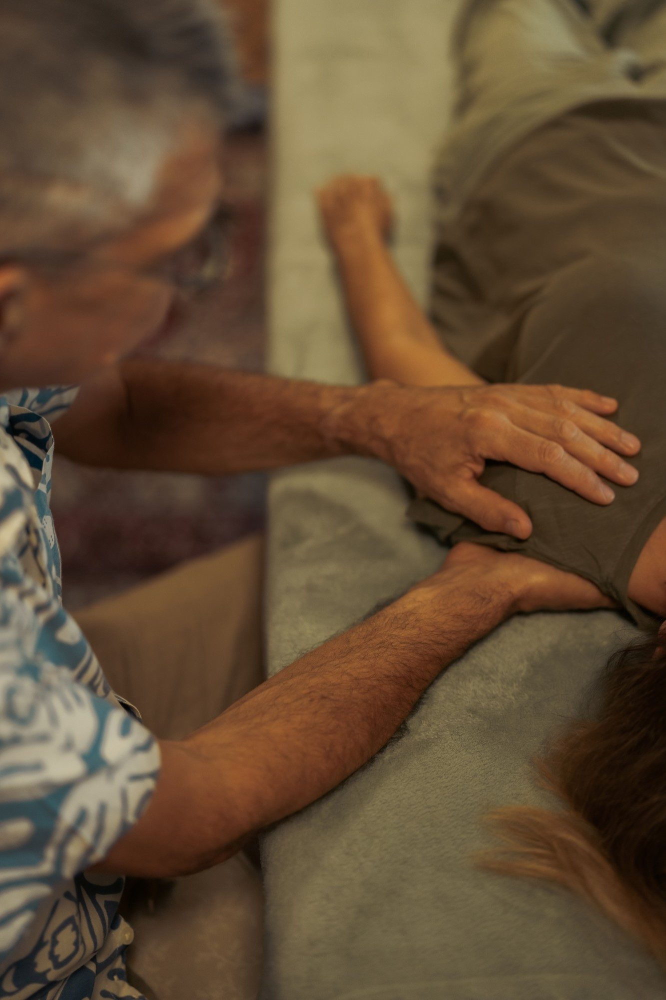
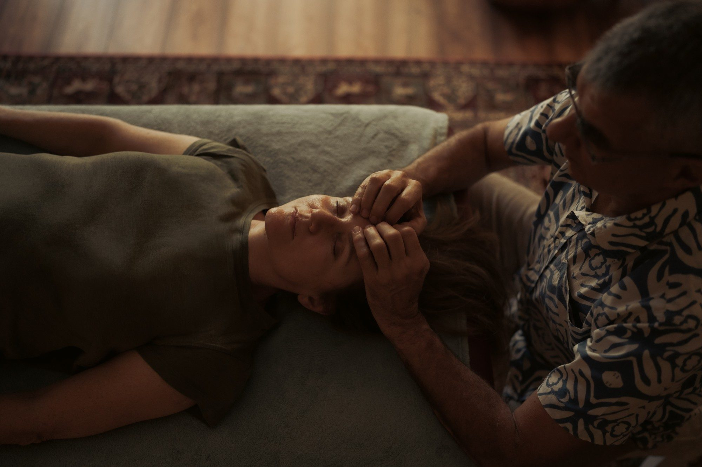

Önismeret és fejlődés
Önismeret, életviteli tanácsadás, személyiségfejlesztés – hogy közelebb kerülj ahhoz, aki valójában vagy.
Integrative Core Dynamics és integrált kranioszakrális terapeuta
Testközpontú terápia és kranioszakrális kezelés egy biztonságos térben, ahol újra kapcsolódhatsz a saját testeddel – és rajta keresztül a valódi érzéseiddel.

Bemutatkozás
Integrative Core Dynamics (ICD) és integrált kranioszakrális terapeuta vagyok. 2017 és 2022 között tanultam ICD‑terapeutának – ez egy testközpontú, szomatikus terápiás módszer –, és a képzés során magam is végigjártam egy mély önismereti folyamatot. Az ICD‑ben a szupervíziós képzést is elvégeztem. Ezt követően, 2024 és 2026 között a College of Cranio‑Sacral Therapy (CCST) Integrált Kranioszakrális Terapeuta képzését végeztem el.
A testtel azért szeretek dolgozni, mert azt tapasztalom: olyan tudás van benne, amit kognitív úton nem találok meg máshol. A test tartása, mozdulatai, őszintesége és érzékenysége elmesél nekem egy lélektörténetet. Ebből kibontakozik egy érzelmi mintázat, amelyet a terápia során a testen keresztül tudunk áramoltatni és kinyitni.
„Hiszem, hogy mély belső figyelemmel, intenzív mozgással és önkifejezéssel közelebb kerülhetünk valódi önvalónkhoz.”
Segítek neked egy biztonságos térben megtalálni a kapcsolatot a saját testeddel – és ezen keresztül a valódi érzéseiddel. Különféle segédeszközökkel a testeddel ki is tudod fejezni ezeket az érzéseket, ott, ahol ez biztonságos.
Egyéni üléseken dolgozom. A klienseket pilisszentiváni rendelőmben fogadom, a Pilis lábánál, csendes, természetközeli környezetben – és Budapesten is rendelek.
Önismeret, életviteli tanácsadás, személyiségfejlesztés – hogy közelebb kerülj ahhoz, aki valójában vagy.
Önértékelési problémák, viselkedési nehézségek, belső elakadások – amikor valami nem engedi, hogy továbblépj.
Konfliktusok, párkapcsolati problémák, életközépi, spirituális vagy más válságok és krízishelyzetek.
Szemlélet
Minden, ami az ülésen történik, egy védett, elfogadó térben történik. Csak itt tud megmutatkozni az, ami valóban bennünk van.
A test olyan tudást hordoz, amit a gondolkodás nem ér el. A tartás, a légzés, a mozdulat mind elmond valamit rólunk.
Nem irányítok, hanem követek. Teret adok annak, hogy a saját belső intelligenciád vezessen vissza az egyensúlyhoz.
Szolgáltatások
Mindkét módszer a testen keresztül közelít az emberhez: az ICD a mozgás, a légzés és a hangadás erejével, a kranioszakrális terápia a finom érintés csendjével.


Testközpontú, szomatikus terápia
Miért ezzel dolgozom
Az ICD‑t azért választottam, mert itt a test nem kísérője a terápiának, hanem a főszereplője. Szomatikus terápiás módszer: a testi érzetből indulok ki. A beszélgetés és az elme megközelítése csak a folyamat kezdeti része, utána a figyelmemet folyamatosan a testen tartom. Legyünk akárkik is, végső soron a test az, amely kimondja az igazságot.
Amit egyedülállónak látok ebben a módszerben: sehol máshol nincs lehetőség az érzések ilyen erőteljes kifejezésére mozgással, légzéssel és hangadással. A munkában a biztonságos tér megteremtését tartom a legfontosabbnak, mert csak abban lehet igazán megmutatni azt, ami bennünk van.
Az Integrative Core Dynamics komplex, testorientált, szomatikus terápiás és önismereti módszer, amely pszichodinamikus és neoreichiánus alapokon nyugszik. A beszélgetés mellett erősen bevonja a munkába a testi érzeteket, a légzést, a hangadást, a testtartást és a mozgást.
A klienst elvezetem a testi érzetekig, hogy a folyamat onnan induljon, és ne csak a kondicionált elméből. A gyakorlatban ez azt jelenti, hogy ösztönös késztetéseinket, érzelmi és mentális folyamatainkat hozzákapcsoljuk a test légzéséhez, hangadásához és mozgásához. A testi kifejezés és mozgás által – legyen az kézzel, lábbal vagy eszközzel való kifejezés – segítem a klienst, hogy megszabaduljon a feszültségtől. Amint kapcsolatba kerül a frusztrációhoz kötött, eddig távol tartott érzéseivel, lehetővé válik számára, hogy elfogadja azokat.
Ezzel párhuzamosan a kliens közel kerül saját sebezhetőségéhez és szomorúságához is, amely mögött autentikus szükségletei találhatók. A légzéstechnikák segítenek mélyebben megélni és tudatosan hordozni az érzelmeket; a visszatartott hangok szabadjára engedésével a test és a psziché mélyebben ellazul. Emellett a szándék irányításával, a határszabással és a konfrontációval is gyakorlunk – hogy vágyainkat úgy tudjuk kifejezni, hogy a másik ember valóban megértsen bennünket.
A klienssel való kapcsolódásban a legfontosabb szempont, hogy mindig csak addig haladunk a folyamatban, ameddig a kliens idegrendszere bírja. Ez traumatudatos megközelítés: nem a hatékonyság a lényeg, hanem a megfelelő idő és tér biztosítása a test számára. Ha úgy látom, hogy már túl sok, inkább lassabban haladunk – néha csak a köztünk lévő biztonságos távolság és tempó megtalálásával dolgozunk.
Egy emberi idegrendszert igazából csak egy másik ember idegrendszere tud megnyugtatni.
A tanácsadás mentálhigiénés fejlesztő és támogató jellegű, nem helyettesít orvosi, pszichiátriai vagy pszichoterápiás kezelést.
Érdekel az ICD terápia

Érintéssel végzett holisztikus kezelés
Miért ezzel dolgozom
A kranioszakrális képzést azért választottam, hogy tovább fejlesszem az intuíciós képességemet, és gyakoroljam a gyengéd kapcsolódást. Ráadásként komoly anatómiai ismeretekre is szert tettem, ami még pontosabb kapcsolódást tesz lehetővé a testtel.
A kranioszakrális munkában a csendet és a finomságot szeretem a legjobban. Itt nem kell semmit tenned: fekszel, én pedig finom érintéssel követem a tested saját ritmusát. Az ICD aktív, kifejező munkája után ez a módszer egy másik kaput nyitott meg számomra – azt, hogy a test akkor rendeződik, ha végre teret és figyelmet kap hozzá. Meditatív állapotban tudok segíteni másokon, és közben magam is töltődöm.
Legyen szó hátproblémákról, ízületi kopásról, fülzúgásról vagy fejfájásról, a kranioszakrális terápia az idegrendszeren keresztül képes szabályozni a test megzavart működését. A szelíd, kézrátételes módszer kiegyenlíti a feszültséget, és makacs eseteknél is segítséget hozhat.
Érintéssel végzett holisztikus terápiás eljárás, amely az embert a maga teljességében szemléli. A terápia fókuszában a kliens öngyógyító rendszerét zavaró blokkok, korlátozások, feszültségek és traumák állnak. Testünk szavak nélkül is történeteket mesél: legfontosabb életeseményeink nyomot hagynak a szövetekben – a velük együtt megélt érzelmekkel együtt.
A kranioszakrális integráció egyik legfőbb erőssége, hogy nemcsak felismeri a fizikai és érzelmi tényezők szétválaszthatatlan kölcsönhatását, hanem egyetlen egységes folyamaton belül egyszerre foglalkozik mindkettővel. Sok testi panasz mögött érzelmi háttér húzódik; a kezelés az egész embert – érzelmi állapotát és szükségleteit is – figyelembe veszi, így ennek a háttérnek is teret ad.
A tanácsadás mentálhigiénés fejlesztő és támogató jellegű, nem helyettesít orvosi, pszichiátriai vagy pszichoterápiás kezelést.
A módszer nevét a rendszer két végpontjáról, a koponyáról (cranium) és a keresztcsontról (sacrum) kapta. E két pont között áramlik az agy‑gerincvelői folyadék, amelynek finom, kitapintható mozgása – a kranioszakrális ritmus – a szívverés és a légzés mellett testünk harmadik alapvető életritmusa. Ez az első ritmusunk, amely a megtermékenyüléskor megjelenik, és az utolsó, amely a halált követően megszűnik.
Amikor ez a ritmus szabadon áramolhat, a szervezet természetes egyensúlya helyreáll, és mély nyugalom, belső rendeződés érzése jöhet létre.
A kezelés felöltözve, kényelmesen, hanyatt fekve történik a kezelőágyon, nyugodt körülmények között, és egy órát vesz igénybe. Finom, célzott érintéssel kapcsolódom a test mély belső ritmusaihoz, és olyan biztonságos, ellazult állapotot hozok létre, amelyben a szervezet visszatérhet saját természetes harmóniájához. Ebben a mély nyugalomban a test elengedheti a feszültségeket, csökken a stressz, megnyílik a lehetőség az Elsődleges Légzéssel való kapcsolódásra, a szervezet pedig visszanyerheti fizikai egyensúlyát, stabilitását és belső erőforrásait.
Gyakorlott kezelő számára érzékelhetővé válik a belső ritmusok és az agy‑gerincvelői folyadék finom áramlása – és annak elakadásai, feszültségei. Ezt a finom ritmust követem és támogatom, és ahol szükséges, finom helyreigazításokat végzek a koponyán és a keresztcsonton. A jelenlétem közben semleges: nem avatkozom be, nem irányítok, hanem teret adok a testnek, hogy saját belső intelligenciája vezesse vissza az egyensúly, a nyugalom és az egészség állapotába.
Történetem
2015 óta adótanácsadóként dolgoztam. A számok, a szabályok és a pontosság világa volt az otthonom – miközben egyre inkább a test, az önismeret és a segítő munka felé fordult a figyelmem.
2017‑ben kezdtem el az ICD‑képzést, majd a kranioszakrális terápiát tanultam ki, és közben hosszú ideig még az adótanácsadói pályán is maradtam. 2026. november 1‑től főállású terapeutaként dolgozom – ez az az út, amelyen tovább szeretnék menni. A tapasztalat, amit a számok világában szereztem – a figyelem, a megbízhatóság, a bizalom –, velem jön ebbe az új szakmába is.
Kapcsolat
Ha úgy érzed, ideje kapcsolódni a saját testeddel, hívj vagy írj. Időpontot telefonon vagy e‑mailben tudsz kérni; első lépésként röviden egyeztetjük, miben és hogyan tudok segíteni.
Hívj, vagy írj egy rövid üzenetet: mikor érnél rá, és melyik módszer érdekel. Hamarosan visszajelzek.
Egy alkalom egyórás blokk, érkezéssel és indulással együtt.